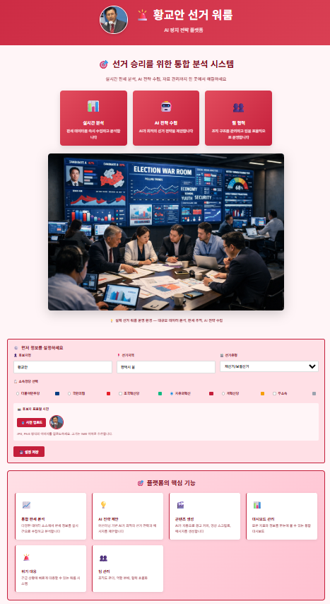

📖 선거 워룸 플랫폼 사용 설명서
AI 기반 선거 전략 도구 완벽 가이드

1. 플랫폼 개요
🚨 선거 워룸은 AI 기반의 통합 선거 전략 플랫폼입니다. 데이터 분석, 여론 분석, AI 콘텐츠 생성, 팀 관리 등을 한 곳에서 처리할 수 있습니다.
핵심 기능
📊 데이터 분석
여론조사, 정책 분석, 전략 비교를 통한 의사결정 지원
🤖 AI 도구
AI가 자동으로 메시지, 광고, 영상 스크립트를 생성
👥 팀 관리
캠프 구성원 조직화, 작업 할당, 실시간 추적
📈 실시간 대시보드
핵심 지표를 한눈에 파악하는 대시보드
2. 시작하기
초기 설정
Step 1: 소속 정당 선택
메인 페이지 → 우측 상단 "설정" (또는 메뉴 14번) → "소속 정당" 선택 → 저장
메인 페이지 → 우측 상단 "설정" (또는 메뉴 14번) → "소속 정당" 선택 → 저장
Step 2: API 키 설정 (선택사항)
설정 페이지 → "Gemini API 키" 입력 → 저장
AI 기능을 사용하려면 Google Gemini API 키가 필요합니다. https://ai.google.dev에서 무료 API 키를 발급받으세요.
설정 페이지 → "Gemini API 키" 입력 → 저장
AI 기능을 사용하려면 Google Gemini API 키가 필요합니다. https://ai.google.dev에서 무료 API 키를 발급받으세요.
Step 3: 캠프 팀 구성
워룸 (메뉴 9번) → "팀 추가" → 팀명 + 팀장명 → 확인
팀을 추가하면 조직도 (메뉴 11번)에 자동 반영됩니다.
워룸 (메뉴 9번) → "팀 추가" → 팀명 + 팀장명 → 확인
팀을 추가하면 조직도 (메뉴 11번)에 자동 반영됩니다.
API 키는 브라우저의 로컬 스토리지에만 저장되며, 외부로 전송되지 않습니다.
4. 단계별 사용 가이드
📌 시나리오 1: 팀 구성 및 작업 배치
목표: 홍보팀과 조직팀을 구성하고 일일 작업 배치
Step 1: 메뉴 9번 "워룸" 클릭
Step 2: "팀 추가" → "홍보팀" 입력 → 팀장명 "김대리" 입력 → 확인
Step 3: 같은 방식으로 "조직팀" 추가
Step 4: "✅ 실시간 작업 추적" 섹션에서 "작업 추가"
Step 5: "SNS 포스트 작성" 작업 등록 → 진행도 설정 → 저장
Step 6: 메뉴 11번 "조직도" 클릭 → 팀과 팀원이 자동 표시됨을 확인
Step 1: 메뉴 9번 "워룸" 클릭
Step 2: "팀 추가" → "홍보팀" 입력 → 팀장명 "김대리" 입력 → 확인
Step 3: 같은 방식으로 "조직팀" 추가
Step 4: "✅ 실시간 작업 추적" 섹션에서 "작업 추가"
Step 5: "SNS 포스트 작성" 작업 등록 → 진행도 설정 → 저장
Step 6: 메뉴 11번 "조직도" 클릭 → 팀과 팀원이 자동 표시됨을 확인
📌 시나리오 2: AI로 광고 문안 생성
목표: 정책 광고를 위한 3가지 버전의 카피 자동 생성
Step 1: 메뉴를 클릭
Step 2: "📢 광고 카피 최적화" 탭 클릭
Step 3: 기존 광고 문안 입력 (예: "청년 일자리 100만 개 창출")
Step 4: "광고 목표" → "지지율 증가" 선택
Step 5: "광고 채널" → "유튜브" 선택
Step 6: "최적화 시작" 클릭 (15~30초 대기)
Step 7: Version A, B, C 3가지 버전 확인 → 마음에 드는 버전 복사
Step 1: 메뉴를 클릭
Step 2: "📢 광고 카피 최적화" 탭 클릭
Step 3: 기존 광고 문안 입력 (예: "청년 일자리 100만 개 창출")
Step 4: "광고 목표" → "지지율 증가" 선택
Step 5: "광고 채널" → "유튜브" 선택
Step 6: "최적화 시작" 클릭 (15~30초 대기)
Step 7: Version A, B, C 3가지 버전 확인 → 마음에 드는 버전 복사
📌 시나리오 3: 경쟁 후보 분석
목표: 경쟁자 약점 발굴 및 대응 전략 수립
Step 1: 메뉴 2번 "판세정보" → 경쟁 후보 선택
Step 2: 경쟁자의 지역별 지지도 약점 확인
Step 3: 메뉴 3번 "승리전략비교" → 경쟁자 약점 지역에 집중 공략 전략 검토
Step 4: 메뉴 9번 "워룸" → "💬 설득 메시지" 탭
Step 5: 약점 지역 주민을 타겟으로 설득 메시지 생성
Step 1: 메뉴 2번 "판세정보" → 경쟁 후보 선택
Step 2: 경쟁자의 지역별 지지도 약점 확인
Step 3: 메뉴 3번 "승리전략비교" → 경쟁자 약점 지역에 집중 공략 전략 검토
Step 4: 메뉴 9번 "워룸" → "💬 설득 메시지" 탭
Step 5: 약점 지역 주민을 타겟으로 설득 메시지 생성
📌 시나리오 4: 영상 콘텐츠 제작 기획
목표: 틱톡 30초 영상 대본 및 제작 가이드 자동 생성
Step 1: 메뉴 9번 "워룸" → "🎬 영상 스크립트" 탭
Step 2: "영상 주제" → "청년 정책: 무주택 청년 전세금 지원" 입력
Step 3: "영상 유형" → "감성호소" 선택
Step 4: "플랫폼" → "틱톡" 선택
Step 5: "영상 길이" → "30초" 선택
Step 6: "스크립트 생성" 클릭 → 전체 스크립트, 촬영 가이드, 자막 확인
Step 1: 메뉴 9번 "워룸" → "🎬 영상 스크립트" 탭
Step 2: "영상 주제" → "청년 정책: 무주택 청년 전세금 지원" 입력
Step 3: "영상 유형" → "감성호소" 선택
Step 4: "플랫폼" → "틱톡" 선택
Step 5: "영상 길이" → "30초" 선택
Step 6: "스크립트 생성" 클릭 → 전체 스크립트, 촬영 가이드, 자막 확인
5. 팁 & 트릭
💡 AI 기능을 최대로 활용하기
AI 결과가 마음에 들지 않으면 "초기화"를 클릭하고 입력 내용을 조금 수정해서 다시 시도하세요. 더 좋은 결과를 얻을 수 있습니다.
복사 버튼(📋)을 눌러 AI 결과를 즉시 클립보드에 복사할 수 있습니다. 이를 카톡, SNS, 메일로 바로 붙여넣을 수 있습니다.
💡 작업 관리 팁
워룸의 "진행도" 설정으로 각 작업의 완료율을 추적하세요. "진행도" 버튼을 클릭하면 백분율(0~100%)을 설정할 수 있습니다.
팀 채팅은 제공되지 않으므로, 필요한 경우 카톡/슬랙 등 별도 도구를 병행하세요.
💡 데이터 활용 팁
"외부자료"에 여론조사 PDF를 업로드한 후 "AI톡"에서 "이 파일을 분석해줄 수 있나?"라고 물어보면, AI가 파일을 읽고 분석해줍니다.
"통합분석"의 데이터를 스크린샷으로 캡처해서 SNS나 유세에서 사용할 수 있습니다. 각 그래프마다 "📥 다운로드" 버튼이 있습니다.
💡 정당 테마 변경
메뉴 12번 "설정"에서 정당을 선택하면 전체 사이트 색상이 자동으로 변경됩니다 (민주당=파랑, 국민의힘=빨강, 개혁신당=녹색 등). 소속 정당을 정확히 선택하세요!
💡 모바일 사용 팁
모바일에서는 화면이 작으므로, 큰 모니터나 태블릿에서 대시보드와 분석 페이지를 보는 것을 추천합니다.
모바일에서 사이드바가 보이지 않으면 화면 좌측 상단의 "☰" 버튼을 클릭하세요.
6. FAQ (자주 묻는 질문)
Q: API 키가 없으면 AI 기능을 사용할 수 없나요?
네, 맞습니다. AI 기능(6번 AI톡 등)을 사용하려면 Google Gemini API 키가 필요합니다. https://ai.google.dev에서 무료로 API 키를 발급받을 수 있습니다. (월 1,500만 토큰 무료 제공)
Q: 내 데이터는 안전한가요?
네, 안전합니다. 모든 데이터는 브라우저의 로컬 스토리지에만 저장되며, 서버에 업로드되지 않습니다. API 키도 로컬에서만 유지되어 보안이 보장됩니다.
Q: 팀원이 이 플랫폼에 접속할 수 있나요?
현재 버전은 단일 사용자용입니다. 팀원들이 사용하려면 각각 자신의 브라우저에서 독립적으로 접속해야 합니다. 향후 버전에서 협업 기능(다중 사용자, 실시간 공동 편집 등)을 추가할 계획입니다.
Q: 데이터를 백업하거나 내보낼 수 있나요?
현재 자동 백업 기능은 없습니다. 중요한 데이터는 주기적으로 스크린샷을 캡처하거나 "외부자료"에 파일로 저장하는 것을 추천합니다. 향후 JSON 내보내기 기능 추가를 검토 중입니다.
Q: AI가 생성한 콘텐츠를 그대로 사용해도 되나요?
AI 결과는 "초안"으로 생각하고, 반드시 검토 후 수정해서 사용하세요. AI가 부정확한 정보를 포함할 수 있으므로, 중요한 통계나 약속은 사실 확인이 필수입니다.
Q: 다른 후보의 정당으로 전환할 수 있나요?
네, 설정 페이지에서 언제든지 정당을 변경할 수 있습니다. 다만 기존 데이터는 유지됩니다. 완전히 새로운 캠프를 시작하려면 브라우저 개발자 도구(F12) → 콘솔에서 `localStorage.clear()` 명령으로 모든 데이터를 삭제할 수 있습니다.
Q: 기술 지원은 어떻게 받나요?
문제가 발생하면 브라우저의 개발자 도구(F12)를 열어서 콘솔 메시지를 확인하세요. 버그 보고는 jaiwshim@gmail.com 또는 010-2397-5734로 연락 주세요.
Q: 이 플랫폼의 비용은?
기본 기능은 완전 무료입니다.